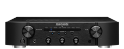

Amplifiers
Marantz PM6007
The Marantz PM6007 is a stereo integrated amplifier that blends classic design with modern features. Known for its musicality and high-quality audio reproduction, this amplifier is a perfect centerpiece for a two-channel audio system. With its sleek aesthetics and impressive performance, the PM6007 caters to audiophiles seeking a refined listening experience.
Color